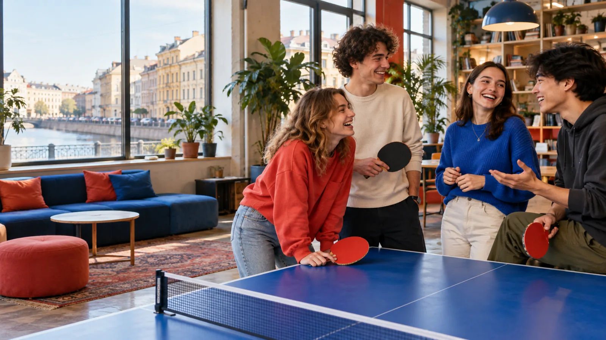

ПМК Морской
Железноводская ул., д. 20
Смотреть площадкуСпорт, творчество, языки и общение рядом с домом. Выбери то, что тебе интересно, и узнай, куда прийти.

14-35 летВозможности для молодёжи
БесплатноВсе направления, указанные в каталоге
РядомНачни поиск со своего района
Выбирай по интересу
Выбери направление, затем уточни занятие и район. Гид по занятиям поможет с выбором.
Ориентируйся в городе
На карте 331 площадка из 334 во всех 18 районах. Для остальных координаты уточняются; адреса есть в карточках.
Загружаем карту клубов…
Предварительные координаты: © OpenStreetMap contributors.Все районы ↗
Просто начать
Выбери занятие или район, который тебе подходит.
Посмотри адрес и доступные направления.
Спроси у организаторов про расписание и запись.
Программы и набор могут меняться. Перед посещением проверь актуальные условия на странице клуба.
Открыть каталогиЖелезноводская ул., д. 20
Смотреть площадкуПсковская ул., д. 14
Смотреть площадкуСерпуховская ул., д. 26-28
Смотреть площадкупр. Просвещения, д. 47
Смотреть площадку